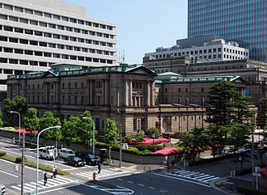
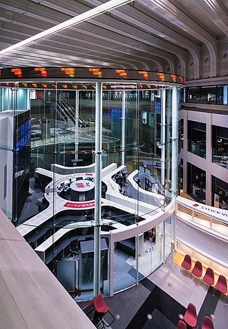

Japan is the third largest national economy in the world, after the United States and China, in terms of nominal GDP,[167] and the fourth largest national economy in the world, after the United States, China and India, in terms of purchasing power parity. As of 2016, Japan's public debt was estimated at more than 230 percent of its annual gross domestic product, the largest of any nation in the world.[168] In August 2011, Moody's rating has cut Japan's long-term sovereign debt rating one notch from Aa3 to Aa2 inline with the size of the country's deficit and borrowing level. The large budget deficits and government debt since the 2009 global recession, followed by the earthquake and tsunami in March 2011, caused the rating downgrade.[169] The service sector accounts for three quarters of the gross domestic product.

Japan has a large industrial capacity, and is home to some of the largest and most technologically advanced producers of motor vehicles, electronics, machine tools, steel and nonferrous metals, ships, chemical substances, textiles, and processed foods. Agricultural businesses in Japan cultivate 13 percent of Japan's land, and Japan accounts for nearly 15 percent of the global fish catch, second only to China.[6] As of 2016, Japan's labor force consisted of some 65.9 million workers.[6] Japan has a low unemployment rate of around four percent. Some 20 million people, around 17 per cent of the population, were below the poverty line in 2007.[171] Housing in Japan is characterized by limited land supply in urban areas.[172]

Japan's exports amounted to US$4,210 per capita in 2005. As of 2014, Japan's main export markets were the United States (20.2 percent), China (17.5 percent), South Korea (7.1 percent), Hong Kong (5.6 percent) and Thailand (4.5 percent). Its main exports are transportation equipment, motor vehicles, iron and steel products, semiconductors and auto parts.[6] Japan's main import markets as of 2015 were China (24.8 percent), the United States (10.5 percent), Australia (5.4 percent) and South Korea (4.1 percent).
Japan's main imports are machinery and equipment, fossil fuels, foodstuffs (in particular beef), chemicals, textiles and raw materials for its industries. By market share measures, domestic markets are the least open of any OECD country.[173] Junichirō Koizumi's administration began some pro-competition reforms, and foreign investment in Japan has soared.